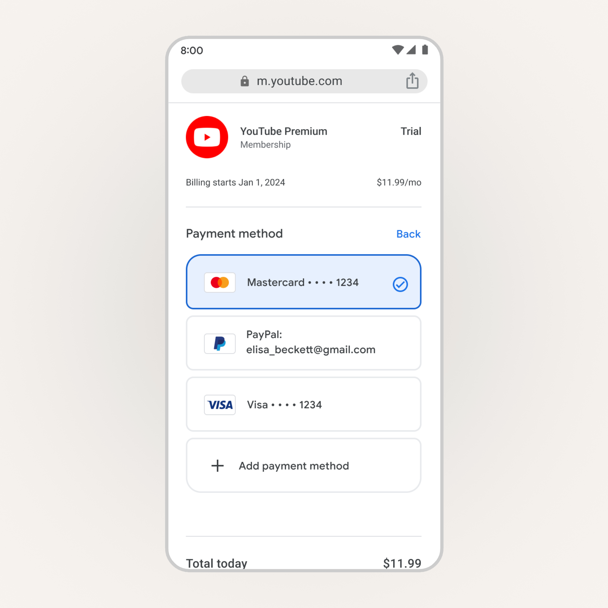
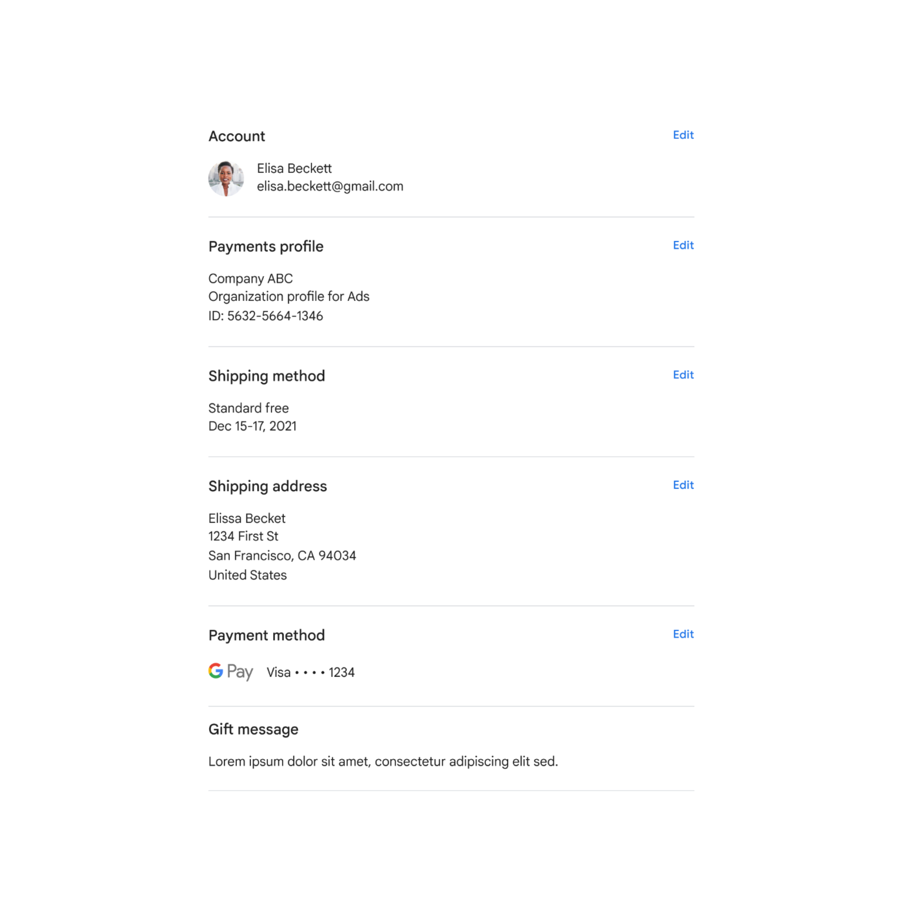
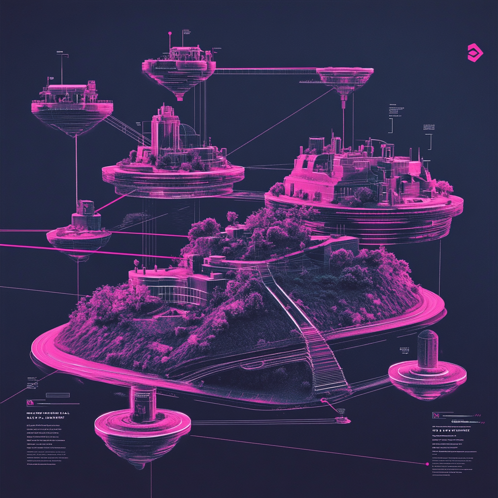

Creating a platform checkout for all of Google.

The Challenge
The team that I was hired to lead had started to launch a new checkout experience for Google. The team had started this product rollout with one of Google's businesses and needed to roll it out to all of Google. The challenge here was that the Platform checkout experience is embedded into various Google UIs in a myriad of ways, which makes for a myriad of challenges, especially navigation. Not only did the checkout have to be embedded in many different containers, but across all clients. The strategy needed work. So we took a step back and re-designed the checkout from the ground up. This was a serious exercise in systems design since we had to account for all of Google's various UI constraints across clients, our technical constraints for Platform, and balance all of that with our vision for the best checkout.
Project Outcome
Higher conversion
In our very first experiment we saw a 9% increase in conversion when we tested our new model against the control. This was a huge leap for us and clearly showed the impact of our work.
Design system contributions
My team contributed over a dozen new components to our Platform design spec and Figma design kit to increase reusability, consistency, and efficiency across the team.
More robust tech infra
Because of our work there was new technical infrastructure created that allowed us to swap navigation models without having to make changes at the individual component level. This allowed us to experiment with different models in different contexts.

The Navigation Model
One of the biggest decisions the team had to make was which navigation model we would use. Industry research revealed that there were 3 main models to choose from (Multi-page, Accordion, and Single-page), but the engineering team didn't have the bandwidth to build them all.
I had the team pressure test the models within our known constraints and this unblocked the decision for what navigation model to use first. While the multi-page model was the most ubiquitous model in the industry, the Accordion model decreased our dependency on other Google 1P UIs — allowing us to do pretty much all of the required tasks inline without affecting the surrounding UI that we didn't control.
Before we had the chance to do our own research we referenced all of the great ecommerce checkout research that has been published by the Baymard Institute, but we also did several studies on our own to compare models across form factors and checkout scenarios.
I helped the team take a principled approach for things like selection and visual design
I anchored the team on the principle of "Don't make me think" based on the research we had conducted. Using this principle, the team used more intuitive and familiar interaction and visual conventions in multiple categories like color (using primary blue to communicate interactivity), shape (aligning to Material standards), and navigation affordances like auto-advance.
It was important to normalize a pattern and pressure test it across all of the data objects with their unique constraints to make sure it would work. There was a lot to weigh here especially across clients and also aligning our vision with Material Design standards, so we had to test various patterns and the design evolved with Material Design conventions.


I focused the team on identifying and solving for inconsistencies in the system
Each data object is connected to a unique UI component. Unfortunately, each component was built in somewhat of a silo for the purposes of a specific launch. I focused my team on paying off as much of this UX/tech debt as possible.
My team thought deeply about how we could normalize the UI across all of these objects — accounting for a summary state, an edit state, and an entry state for each one. Several teams ended up adopting the designs that came out of this normalization exercise.
Principles
We created dynamic product principles using the research we had done. We generated raw insights from the research, turned those into categorized postulates, identified patterns and distilled those into product principles.
01
Don't make me think
The buyflow should feel intuitive and familiar. Don't sacrifice clarity for simplicity.
02
Don't make me wait
Make the experience as fast as possible while balancing speed and control. Lower stakes checkouts can be faster than higher stakes.
03
Keep me safe
Safety is the perception of security and is a crafted value proposition. Addressing users concerns or worries makes the experience feel polished and professional.
04
Cost is king
Make it clear how much I'm spending now and in the future. Help me understand ways I can maximize savings and benefits without overwhelming me.


